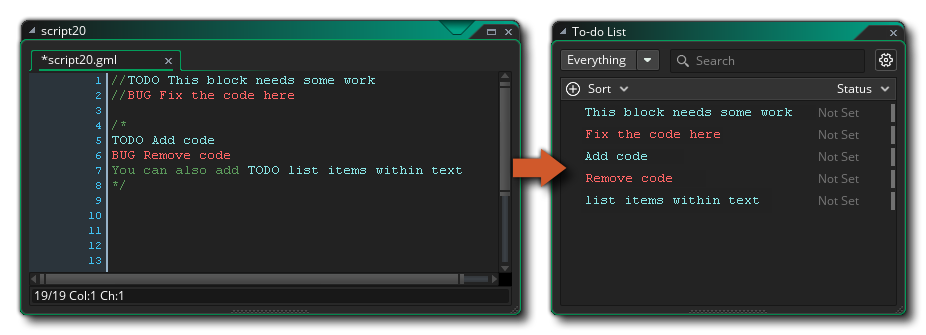

The To-Do List Editor is available from the Tools Menu in the IDE. This editor is where you can add and edit a list of things you need to do for your project. Initially this list is empty and there are only two default list "types": todo and bug, but you can add more types from the To-do List Preferences, and you can add list items either from this editor or using special comments in your object code and scripts. The different parts of the editor are as follows:
- Filters: Here you can choose to show any number of the defined to-do tags, from just one up to all of them. Selecting an individual tag will show only those to-do list items that were created with that tag.
- Add New Item: When you click this button you will will open the "Add New To-do" window. Here you can give a short descriptive text for the item to be added as well as select the Tag to assign to it. Clicking the "Add" button will add the new item to the list. Note that items can also be added through the script editor using the tags defined (this is explained further down this page).
- Preferences: Clicking this will open the To-do List Preferences.
- Display Options: The display options permit you to show the items list in different ways, either through sorting the item descriptions or through filtering the item status. Clicking on either the Sort or Status section headers will open up further options for the item list display.
- Item List: The item list shows a list of all comments
that have been tagged along their current state. You can
change the state of an item at any time by simply clicking on it
and selecting one of the following states from the drop-down menu:
The item has been added to the to-do list but has not been given a status. The item has been completed. The item currently in progress. The item has been blocked and progress can't continue.
Note that the editor also has a Search field at the top which can be used to search through the item list for specific keywords or phrases.
Adding/Removing To-do Items In Code
You are not limited to adding to-do items to your project using only the editor. You can also add to-do items at specific points within the code using the tags that are defined in the To-do List Preferences. There are two tags predefined for you to use - "BUG" and "TODO" - but you can define more as you require them.
Tags that have been defined for your to-do list will automatically be detected by GameMaker Studio 2 whenever they are found within comments in the script editor (for more information on comments, see the Script Editor section on Editing).
//TODO This block needs some work
//BUG Fix the code here
These will then show up in the item list like this: 
Note that the to-do list will parse all comments within your project, in both custom scripts and in object events, so you should take care when defining your tags to ensure that they are not words that will be used commonly in the text. One way to prevent this is to use all capital letters when defining the tag and making sure that you have flagged "Case Sensitive" in the Preferences too, as illustrated by the default "TODO" and "BUG" tags.
To remove an item from the To-Do List, you can select it and
simply press  on the keyboard, or you can use the
right click
on the keyboard, or you can use the
right click  menu "Delete" option.
menu "Delete" option.
The right mouse button  menu also permits you to open the
comment for editing (you can also press "f2" to edit any
selected item). Note that if you delete the to-do list comments
from your code, then the item will also be removed from To-do List
Editor as well, and vice-versa: if you delete an item from the list
that was added through code, then the code comment will also be
removed.
menu also permits you to open the
comment for editing (you can also press "f2" to edit any
selected item). Note that if you delete the to-do list comments
from your code, then the item will also be removed from To-do List
Editor as well, and vice-versa: if you delete an item from the list
that was added through code, then the code comment will also be
removed.